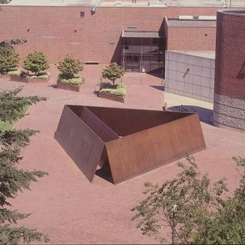
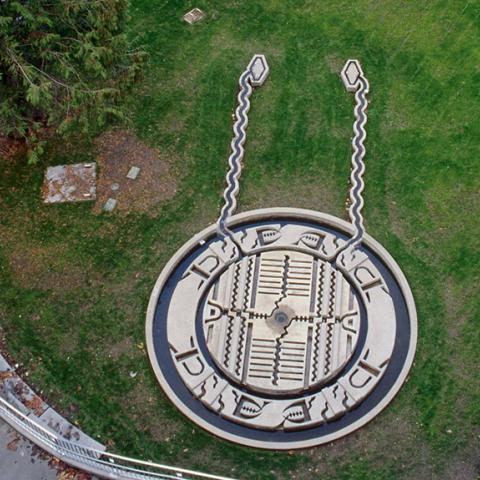
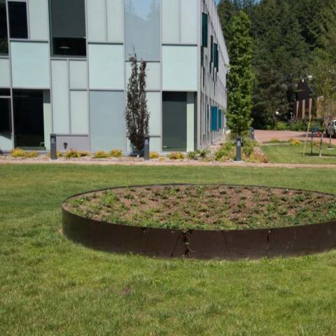

Sculptures Near Carver Gym

Wright's Triangle
- Richard Serra, 1979-80.
- Corten steel. 9' h. x 42 3/4' w.
- Serra’s work engages observers in a different
way than traditional sculptures. Rather than
simply looking at the work to admire its
materials and compositional relationships,
viewers are encouraged to walk along Serra’s
sculpture and measure themselves against its
size. Upon entering the sculpture’s inner
space, the experience changes—a barrier
becomes an enclosure, a respite in the middle
of the busy thoroughfare.

The Islands of the Rose Apple Tree Surrounded
by the Oceans of the World for You, Oh My
Darling
- Alice Aycock, 1987.
- Waterfilled cast concrete. 9' h. x radius 10.5'.
- In her sculpture, Aycock translates a cosmological
diagram of the Indian Jain religion into a
three-dimensional concrete form with flowing water.
Here we see the middle world (the domain of humans,
animals and plants) in a bird’s eye view, with its
mountains, lakes, rivers and islands surrounding
the sacred Mount Meru.

Lifted Conical Depression
- Meg Webster, 1990.
- Copper ring with earthwork. 48” h x 15’ diam.
- Deeply concerned about ecology, Webster is known
for sculptures that combine earth’s materials—soil,
salt, hay and water—with a minimalist vocabulary of
cones, mounds and spheres. From a distance the low
lying copper ring may look like an ordinary planter,
but close up the viewer will see a garden which, in
a conical shape, slowly sinks into the earth.